Laboratorio de Anatomía Patológica
JC PATH LAB
Excelencia en Diagnóstico Patológico
35+
Años de Experiencia
Especialista Certificado
50K+
Estudios Realizados
Nuestros Servicios Especializados
Análisis microscópico de tejidos obtenidos por cirugía o procedimientos médicos para identificar la presencia y tipo de enfermedades como tumores o inflamaciones. Este proceso orienta el diagnóstico y el tratamiento médico adecuado.
LISTA DE PRECIOS - BIOPSIAS
| BIOPSIA GÁSTRICA | 80 SOLES |
| BIOPSIA DE ESÓFAGO, INTESTINO DELGADO Y COLON | 80 SOLES |
| BIOPSIA DE CERVIX | 80 SOLES |
| CONO CERVICAL | 120 SOLES |
| BIOPSIA DE PRÓSTATA (POR 6 FRASCOS) | 250 SOLES |
Evaluación de células individuales o en pequeños grupos, como en el Papanicolaou, para detectar infecciones, alteraciones premalignas o malignas, ayudando a la prevención y diagnóstico temprano.
LISTA DE PRECIOS - CITOLOGÍA
| PAPANICOLAOU | 20 SOLES |
| EXTENDIDO DE TIROIDES (POR CADA LÁMINA) | 20 SOLES |
| EXTENDIDO DE ASPIRACIÓN POR AGUJA FINA DE GLÁNDULA SALIVAL (POR CADA LÁMINA) | 20 SOLES |
Utilización de anticuerpos específicos para identificar proteínas en los tejidos, permitiendo distinguir tipos específicos de tumores, infecciones o enfermedades autoinmunes con gran precisión.
RELACIÓN DE ANTICUERPOS PARA INMUNOHISTOQUIMICA
| ACTINA MUSCULO LISO | ACTINA (HIF35) | ADIPOFILINA |
| AFP (Alfa FetoProteina) | ALK(CD246) | AMACR (Racemase) |
| AMILOIDE A | ANDROGENO | A. CARBONICA IX (CA IX) |
| ARGINASE 1 | ATRX | BCL-2 |
| BCL-6 | BER-EP4 | BETACATENIN |
| C-MYC | CALCITONINA | CALDESMON |
| CALPONINA | CALRETININA | CD1a |
| CD3 | CD4 | CD5 |
| CD7 | CD8 | CD10 |
| CD15 | CD19 | CD20 |
| CD21 | CD23 | CD30 |
| CD31 | CD34 | CD43 |
| CD45 | CD56 | CD61 |
| CD68 | CD79a | CD99 |
| CD117 | CD138 | CDK4 |
| CDX2 | CA-125 | CA 19.9 |
| CEA | CYCLIN D1 | CITOKERATIN CAMS 2 |
| CITOKERATIN OSCAR | CITOKERATIN 5/6 | CITOKERATIN 7 |
| CITOKERATIN 8 | CITOKERATIN 14 | CITOKERATIN 17 |
| CITOKERATIN 18 | CITOKERATIN 19 | CITOKERATIN 20 |
| CITOMEGALOVIRUS | COLAGENO IV | CK HWM (34BE12) |
| CROMOGRANINA A | DESMINA | DOG-1 |
| EBV/LMP-1 | E-CADHERINA | EMA |
| ERG | ESTROGENO | FACTOR VIII |
| FACTOR XIIIa | FASCIN A | FOXP3 |
| FLY-1 | GCOFP-15 | GATA 3 |
| GFAP | GLUT-1 | GLIPICAN 3 |
| GLYCOFORINA | GRANZYME B | HCG (Beta) |
| HER2 (C-ERBB2/CB11) | HEP-PAR1 | HHV-8 |
| HMB45 | IDH-1 | IgG |
| IgG-4 | Ig M | INI-1 |
| IMP-3 | INHIBINA | KAPPA |
| KI67 | LAMBDA | LEF-1 |
| LISOZIMA | MAMAGLOBINA | MELAN A/MART-1 |
| MIELOPEROXIDASA (MPO) | MIOGEINA | MITF |
| MLH1 | MSH2 | MSH6 |
| MUC 2 | MUC 5AC | MUC 6 |
| MUM-1 | MYO D1 | MMP9 |
| NAPSIN A | NEUROFILAMENTO | NGFR |
| OLIG 2 | P16 | P40 |
| PS3 | P57 | PANQUERATINA |
| PAX-5 | PAX-8 | PODOPLANIND2-40 |
| PD-1/CD279 | PD-L1 (22c3) | PLAP |
| PMS2 | PSA | P-TEN |
| PROGESTERONA | PVH | S-100 |
| SATB-2 | SALL 4 | SINAPTOFISINA |
| SOX-10 | SMAD4/DPC4 | STAT 6 |
| T. PALLIDUM | TDT | TLE-1 |
| TIA-1 | TIROGLOBULINA | TIROSINASA |
| TTF-1 | VIMENTINA | WT-1 |
LISTA DE PRECIOS
| COSTO POR UN MARCADOR SIN LECTURA | 100 SOLES |
| COSTO POR UN MARCADOR CON LECTURA/INFORME | 250 SOLES |
Análisis rápido de una muestra durante la cirugía para ayudar a tomar decisiones inmediatas sobre el tratamiento quirúrgico, proporcionando resultados en pocos minutos.
Más información sobre biopsia intraoperatoriaLISTA DE PRECIOS - PIEZAS QUIRÚRGICAS
Piezas Quirúrgicas Convencionales
| VESÍCULA BILIAR | 110 SOLES |
| APÉNDICE CECAL | 110 SOLES |
| ÚTERO Y OVARIOS | 150 SOLES |
| PLACENTA | 80 SOLES |
| ÚTERO SIN OVARIO | 90 SOLES |
| TUMOR DE PARTES BLANDAS MENOR A 4 CM | 100 SOLES |
Piezas de Origen Oncológico
| ESTÓMAGO | 250 SOLES |
| COLON NEOPLASICO | 250 SOLES |
| RIÑÓN | 250 SOLES |
| ÚTERO Y OVARIOS SIN GANGLIOS | 200 SOLES |
| ÚTERO Y OVARIO CON GANGLIOS | 300 SOLES |
| TUMOR DE PARTES BLANDAS MAYOR A 4 CM Y MENOR DE 10CM | 150 SOLES |
| TUMOR DE PARTES BLANDAS MAYOR A 10 CM | 200 SOLES |
| BIOPSIA DE MÉDULA ÓSEA SIN RETICULINA | 150 SOLES |
Quiénes Somos
En JC LAB, nuestra misión es contribuir de manera significativa al avance de la medicina a través de diagnósticos precisos y servicios de anatomía patológica de alta calidad. Nos esforzamos por brindar información valiosa para mejorar la atención médica y el bienestar de los pacientes.
En JC LAB, la calidad es nuestra prioridad. Contamos con rigurosos estándares de control de calidad y mantenemos certificaciones que respaldan nuestra dedicación a la excelencia. Cada informe que generamos refleja nuestro compromiso inquebrantable con la precisión y la fiabilidad.
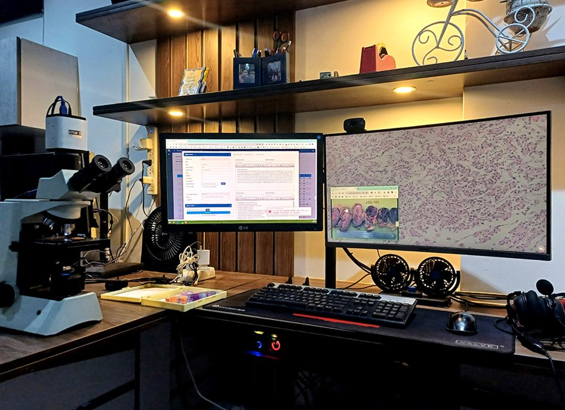
En JC LAB, no solo nos destacamos por nuestros servicios de anatomía patológica de alta calidad, sino también por nuestra adopción de tecnologías avanzadas que optimizan y mejoran cada aspecto de nuestro trabajo. Queremos destacar dos aspectos clave que nos diferencian:
Software de Gestión de Informes:
Contamos con un software de gestión de informes diseñado específicamente para el ámbito de la anatomía patológica. Este sistema integral permite una gestión eficiente de datos, desde la recepción de muestras hasta la entrega de informes finales. Con funcionalidades de seguimiento en tiempo real, aseguramos una trazabilidad completa del proceso, garantizando la integridad y confidencialidad de la información.
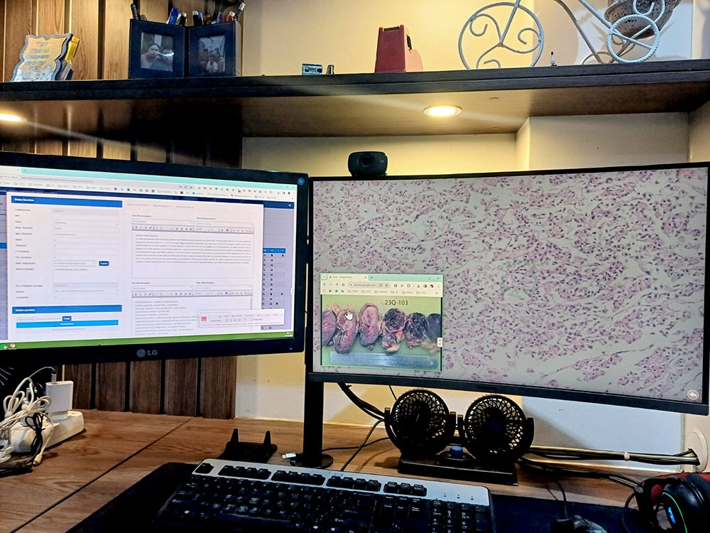
Digitalización de Láminas Histológicas:
En un esfuerzo por mejorar la accesibilidad y colaboración, hemos implementado la digitalización de nuestras láminas histológicas. Este avance tecnológico nos permite compartir imágenes de alta resolución de las muestras, facilitando la colaboración remota con colegas y ofreciendo a nuestros clientes acceso fácil y rápido a los resultados.
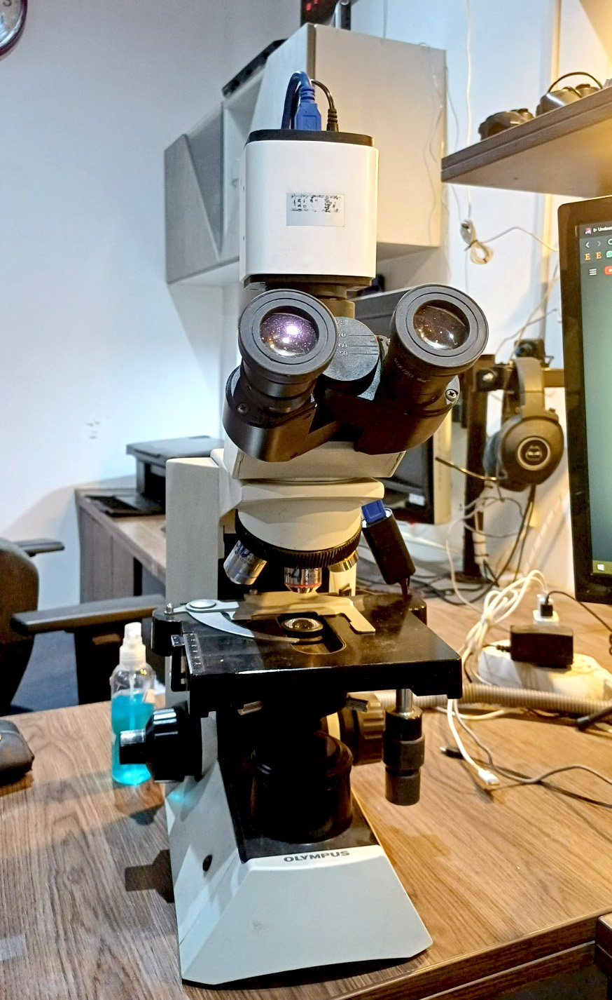
Beneficios Claves:
- Eficiencia Operativa: Nuestro software agiliza los flujos de trabajo, reduciendo los tiempos de respuesta y permitiendo una gestión más eficiente de los recursos, permitiendo remitir los informes hasta máximo 4 días de recibir la muestra quirúrgica y 3 días muestras de citología.
- Precisión Mejorada: La digitalización de las láminas histológicas no solo facilita la visualización, sino que también mejora la precisión en la interpretación y análisis de las muestras.
- Seguridad de Datos: Nuestro compromiso con la seguridad de los datos garantiza la confidencialidad de la información del paciente y cumple con los estándares regulatorios.
Estos avances tecnológicos no solo demuestran nuestra adaptación a las últimas tendencias, sino que también refuerzan nuestro compromiso con proporcionar resultados precisos y accesibles. En JC LAB, fusionamos la tradición de la anatomía patológica con la innovación tecnológica para ofrecer un servicio completo y de vanguardia a nuestros clientes.
Tenemos 1 ambiente especialmente diseñado para el procesamiento de muestras, llamado área de macroscópica, ésta área presenta campana extractora flujo laminar y aire que extrae los gases tóxicos, para protección del personal, además presenta tanto a nivel de la entrada del ambiente, como tubos con extractores de aire para todo el ambiente. Como se ve las imágenes también presenta 1 gabinete para el adecuado almacenaje de las láminas tacos, todo totalmente organizado para que en cualquier momento el paciente o la institución al momento de solicitar la sea inmediatamente entregado.
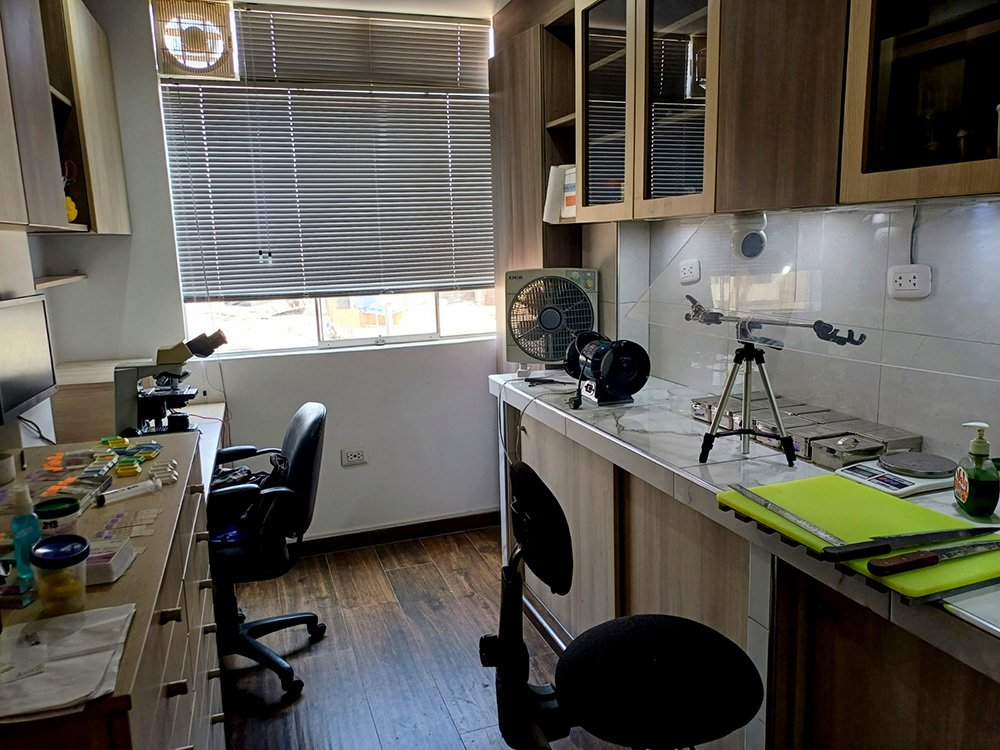
En resumen, en JC LAB, nos enorgullece ser su socio confiable en anatomía patológica. Nuestro compromiso con la calidad, la innovación y la ética nos distingue, y esperamos poder colaborar con ustedes para avanzar juntos en la mejora de la salud y la medicina. Gracias por considerarnos, esperamos su invitación para discutir más a fondo posibles formas de colaboración.
Agradecido por su gentil atención, me suscribo de usted quedando a su disposición, para disipar alguna duda, que pueda sugerirle acerca del producto.
Classroom
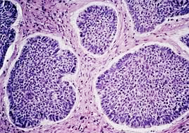
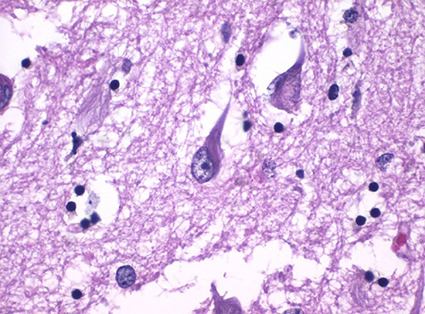
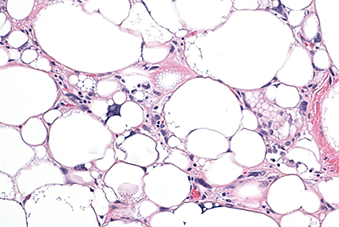
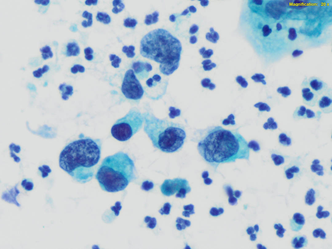
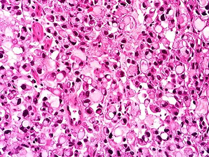
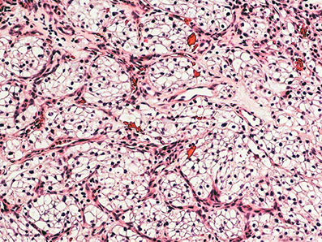
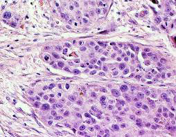
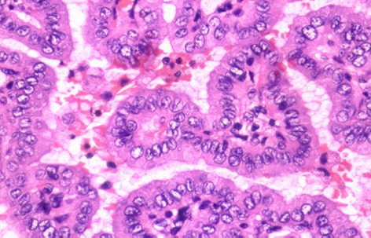
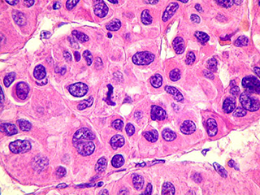
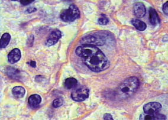
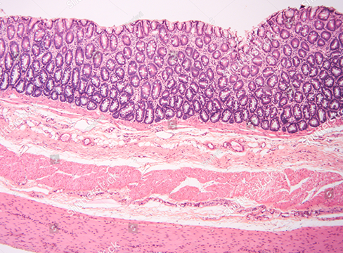
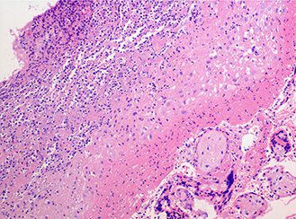
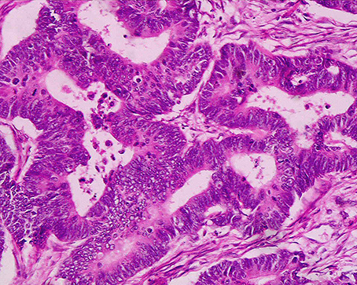
Nuestros Protocolos de Manejo
Contenido del protocolo de biopsias...
Este protocolo es rápido, eficaz y ideal para una evaluación intraoperatoria.
Principio:
La tinción de Hematoxilina-Eosina
(H&E) es
el estándar de oro. La hematoxilina tiñe los núcleos de
azul/púrpura,
mientras que la eosina tiñe el citoplasma y las estructuras
extracelulares de rosa.
Ventajas de este protocolo:
- Bajo consumo de alcohol: Utiliza solo dos baños de alcohol de 95°
(uno
para fijar y otro para deshidratar).
- Rápido: Menos de 2 minutos.
- Eficiente: Proporciona un contraste nuclear-citoplasmático
excelente.
Reactivos Necesarios:
- Fijador: Alcohol isopropílico o etanol al 95%.
- Hematoxilina Harris (o similar).
- Agua acidificada (1-2 gotas de HCl concentrado en 500 ml de agua
destilada).
- Eosina acuosa o alcohólica.
- Alcohol al 95% (para deshidratar).
- Xilol o sustituto de xilol (para aclarar).
- Medio de montaje sintético.
PROCEDIMIENTO PASO A PASO:
1. Fijación Inmediata: Sumergir la impronta inmediatamente después
de
tomarla en Alcohol al 95% durante 30 segundos. Esto previene el
secado
al aire y la distorsión celular.
2. Escurrir el exceso de alcohol.
3. Tinción Nuclear (Hematoxilina): Sumergir el portaobjetos en
Hematoxilina Harris durante 20-30 segundos.
4. Enjuagar con agua corriente hasta que el agua salga clara (20-30
segundos).
5. Diferenciación: Sumergir brevemente (1-3 inmersiones rápidas) en
Agua
acidificada. Este paso elimina el exceso de hematoxilina de los
citoplasmas. ¡No exceder el tiempo!
6. Enjuagar inmediatamente en agua corriente (10 segundos).
7. "Azuleo": Sumergir en agua con un pH ligeramente alcalino (agua
del
grifo es suficiente) durante 10 segundos para volver los núcleos de
un
azul brillante.
8. Tinción Citoplasmática (Eosina): Sumergir en Eosina durante 10-20
segundos.
9. Escurrir el exceso.
10. Deshidratación y Aclarado: Sumergir en Alcohol al 95% (2 baños
rápidos de 5-10 segundos cada uno) para deshidratar.
11. Sumergir en Xilol o sustituto de xilol (2 baños de 30 segundos
cada
uno) para aclarar.
12. Montaje: Montar con medio de montaje sintético y cubrir con un
cubreobjetos.
Nota: Para una evaluación ultra-rápida (menos de 60 segundos), muchos tecnólogos utilizan tinciones tipo Diff-Quik (Romanowsky modificado), que son aún más rápidas y usan muy poco alcohol, pero el contraste H&E es más familiar para los patólogos en el contexto intraoperatorio.
El Pap es una tinción policromática que permite un detallado estudio de la cromatina y la diferenciación citoplasmática (queratinización, metaplasia, etc.).
Principio:
Utiliza múltiples colorantes
(hematoxilina, Orange G, EA-50 o EA-65) que se diferencian con
alcohol
acidificado para obtener una gama de colores.
Modificaciones para eficiencia:
- Volúmenes reducidos: Usar cubetas pequeñas o frascos de boca
estrecha
para minimizar la evaporación y el volumen de reactivo
necesario.
- Alcohol acidificado reutilizable: El alcohol acidificado para la
diferenciación puede usarse para varias series de tinciones si se
controla su fuerza.
- Baños de alcohol de menor concentración: Se puede utilizar etanol
al
95% para la deshidratación inicial y final en lugar de al 100%,
reduciendo costos.
Reactivos Necesarios:
- Fijador: Alcohol etílico al 95% (Spray citofijador o en baño).
- Hematoxilina de Papanicolaou (ej. Harris o Gill).
- Alcohol acidificado (0.5% HCl en alcohol al 70% o 95%).
- Solución de Orange G.
- Solución de EA-50 o EA-65 (Eosina Azure).
- Alcohol al 95% (para deshidratar).
- Alcohol absoluto (opcional, se puede sustituir por 95% en la
mayoría
de pasos).
- Xilol o sustituto de xilol.
- Medio de montaje.
Procedimiento Paso a Paso:
1. Fijación: Las muestras (LBC o convencionales) deben estar fijadas
inmediatamente en alcohol etílico al 95% durante un mínimo de 15
minutos. La fijación adecuada es crítica.
2. Hidratación: Sumergir en Alcohol al 70% y luego en Agua destilada
(1
min cada uno). Esto prepara las células para la tinción acuosa.
3. Tinción Nuclear: Hematoxilina durante 3-5 minutos.
4. Enjuagar en agua corriente.
5. Diferenciación (Paso Ácido Clave): Sumergir en Alcohol
acidificado
(0.5% HCl) por 2-5 inmersiones rápidas. Este es el paso más crítico.
El
exceso de tiempo aquí destruirá la tinción nuclear.
6. Enjuagar exhaustivamente en agua corriente (5-10 minutos).
7. "Azuleo": Sumergir en agua corriente o agua con un poco de
bicarbonato/litro (1-2 minutos).
8. Deshidratación: Sumergir en Alcohol al 70% y luego en Alcohol al
95%
(1 min cada uno).
9. Tinción Citoplasmática: Orange G durante 1-2 minutos.
10. Enjuagar en 2 baños de Alcohol al 95% (brevemente, para eliminar
el
exceso).
11. EA-50 o EA-65 durante 2-5 minutos (ajustar según la reactividad
del
lote).
12. Enjuagar en 2 baños de Alcohol al 95% (brevemente).
13. Deshidratación Final y Aclarado:
- Sumergir en Alcohol al 95% (2 baños de 1 minuto cada uno). Este
paso
puede hacerse con alcohol al 95% en lugar de absoluto.
- Si se requiere mayor claridad, usar un baño de Alcohol absoluto (1
min).
- Sumergir en Xilol o sustituto (2-3 baños de 2 minutos cada
uno).
14. Montaje: Montar con medio de montaje de resina sintética.
Consejo de Eficiencia:
El alcohol acidificado
(Paso
4) es donde se gasta más ácido. Prepare volúmenes pequeños y
cámbielo
cuando note que diferencia demasiado lento (núcleos pálidos) o
demasiado
rápido (pérdida de núcleos en todas las muestras). El control visual
es
esencial.
Tiempos exactos, contingencias y controles de calidad para obtener láminas diagnósticas óptimas (temperatura ambiente 20-25 °C).
1. Pre-coloración
| Paso | Reactivo | Tiempo | Notas críticas |
|---|---|---|---|
| 1 | Fijación Alcohol-Eter 1:1 | 30 min (máx 24 h) | Tapar; evita autolisis |
| 2 | Hidratación – Agua corriente | 2 min | Cambiar si el agua se enturbia |
2. Tinción nuclear (Hematoxilina Harris)
| Paso | Reactivo | Tiempo | Indicadores / control |
|---|---|---|---|
| 3 | Hematoxilina Harris | 2 min 30 s | Filtrar antes de usar |
| 4 | Agua corriente | 30 s | Lavado por arrastre |
| 5 | Diferenciación HCl 1 % | 3-5 s | Fondo apenas claro |
| 6 | Agua corriente | 30 s | Detener ácido |
| 7 | Azulación – Agua amoniacal | 30-45 s | Núcleo azul intenso |
| 8 | Agua corriente | 2 min | Eliminar alcali; secar borde |
3. Tinción citoplasmática
| Paso | Reactivo | Tiempo | Objetivo / observación |
|---|---|---|---|
| 9 | Alcohol 96 % | 30 s | Pre-deshidratación |
| 10 | Orange G | 1 min 30 s | Queratina → naranja |
| 11 | Alcohol 96 % | 30 s | Lavado |
| 12 | EA-50 | 2 min | Citoplasma: rosa/verde/pardo |
| 13 | Alcohol 96 % | 30 s | Retirar colorante libre |
| 14 | Alcohol 96 % (2.º baño) | 30 s | Asegura limpieza |
4. Deshidratación – Aclaramiento – Montaje
| Paso | Reactivo | Tiempo | Indicador |
|---|---|---|---|
| 15 | Alcohol absoluto I | 1 min | Sin turbidez |
| 16 | Alcohol absoluto II | 1 min | Deshidratación completa |
| 17 | Xilol I | 1 min | Muestra transparente |
| 18 | Xilol II | 1 min | Bordes irisados |
| 19 | Resina de montaje | Inmediato | Sin burbujas; índice refracción 1,48-1,52 |
La Inmunohistoquímica (IHQ) es una herramienta diagnóstica fundamental que combina técnicas histológicas, inmunológicas y químicas para identificar componentes tisulares específicos a través de la interacción antígeno-anticuerpo.
¿Cómo funciona la IHQ?
La IHQ detecta antígenos específicos (proteínas/carbohidratos) mediante el reconocimiento antígeno-anticuerpo, permitiendo visualizar la localización celular de marcadores específicos.
Tipos de Anticuerpos
Monoclonales
Reconocen un único epítopo (clon único). Son altamente específicos. Fabricados mediante hibridomas.
Policlonales
Reconocen múltiples epítopos. Más sensibles pero menos específicos. Mayor tinción de fondo.
Sistemas de Detección
Método Directo
El anticuerpo primario está marcado. Rápido pero requiere más anticuerpo (caro).
Método Indirecto
Se utiliza un anticuerpo secundario marcado. Más versátil, sensible y económico.
Localización de Marcadores
Membranoso
- CD20, CD3, CD45
- HER2, PD-L1
- E-cadherina, BerEP4
Nuclear
- Factores de Transcripción
- TTF-1, p53, p40
- PAX8, GATA3, SOX10
Citoplasmático
- Citoqueratinas (AE1/AE3)
- Vimentina, Desmina
- S100 (Nuclear y Citopl)
Enfoque en Neoplasias Indiferenciadas
Ante un tumor de origen desconocido, se utiliza un panel de cribado inicial (Screening Panel) para determinar el linaje:
| Resultado IHQ | Linaje Probable |
|---|---|
| CK+ / CD45- / S100- | Epitelial (Carcinoma) |
| CD45+ / CK- / S100- | Linfoide (Linfoma) |
| S100+ / SOX10+ / CK- | Melanocítico / Neurogénico |
| Vimentina+ / CK- / CD45- | Mesenquimal (Sarcoma) |
El "Curso del Intestino" (The Gut Course)
Este algoritmo orienta la búsqueda del primario basado en la frecuencia estadística y el sitio de metástasis:
Demografía Clave
- Hombres: Próstata, Pulmón, Colon
- Mujeres: Mama, Pulmón, Colon, GYN
- Jóvenes: Células Germinales, Tiroides
Sitio de Metástasis
- Hueso: Mama, Pulmón, Próstata, Riñón
- Hígado: Colon, Páncreas, Mama, Pulmón
- Cerebro: Pulmón, Mama, Melanoma, Renal
Reglas de Oro del Patólogo
- No interpretes IHQ sin morfología previa: La IHQ debe confirmar o refinar una sospecha morfológica.
- La IHQ es estadística, no absoluta: Existen expresiones aberrantes (ej. CK+ en sarcomas).
- Confía en Paneles, no en tinciones aisladas: Un solo marcador puede fallar o ser inespecífico.
Marcadores de Linaje
| Diferenciación | Marcadores Clave |
|---|---|
| Epitelial | AE1/AE3, CAM5.2, BerEP4, Claudina-4, EMA |
| Mesotelial | Calretinina, WT1 (Nuclear), D2-40, CK5/6 |
| Músculo Liso/Mioepitelial | SMA, Calponina, Desmina, H-Caldesmón |
| Neuroendocrino | Sinaptofisina, Cromogranina, CD56, INSM1 |
| Melanocítico | SOX10, S100, Melan-A, HMB45 |
| Germinal | SALL4, PLAP, OCT4, CD117 |
| Endotelial | ERG (Nuclear), CD31, CD34 |
Sitios Primarios Comunes
Tórax y Abdomen
- Pulmón (Adeno): TTF-1, Napsina A
- Mama: GATA3, RE, GCDFP-15
- GI (Colon): SATB2, CDX2, CK20
- Hígado (CHC): Arginasa-1, HepPar-1
Urogenital y Otros
- Riñón (CCR): PAX8, RCCma, pVHL
- Próstata: NKX3.1, PSA, PSAP
- Tiroides: PAX8, TTF-1, Tiroglobulina
- Urotelio: GATA3, Uroplakina II, p40
¿Eso es Positivo?
La interpretación requiere evaluar la intensidad y el porcentaje de células teñidas, comparando con controles externos e internos.
Patrones Aberrantes
Ciertos tumores expresan marcadores inesperados que pueden causar diagnósticos erróneos:
- CK+ en Sarcomas: Sinovial, Epitelioide, Angiosarcoma.
- PAX8+ No Renales: AdenoCA Seroso de Ovario, Tiroides, Timo.
- S100+ No Melanocíticos: Tumores neurales, Mioepiteliales, Mama.
Desafíos de Tinción
- Tinción Cruzada: PAX8 policlonal puede marcar linfocitos B.
- Focalidad: Marcadores como CDH17 pueden ser muy heterogéneos.
- Anticipación: El CK20 "puntiforme" es clave para Merkel.
Caso A: Merkel vs Pulmón
Ante un tumor de células pequeñas:
- Merkel: CK20+ (Puntiforme), TTF-1-, NE+
- Célula Pequeña: TTF-1+, CK20-, NE+
Caso B: Tumor de Origen Renal
Identificación de metástasis de CPCR Tipo II:
- Inmunofenotipo: PAX8+, P504S+, CK7-, TTF-1-
- Morfología: Arquitectura papilar, nucleolos prominentes.
*Este compendio técnico se basa en las revisiones actualizadas de Kandukuri et al. (Arch Pathol Lab Med, 2017) y Rekhtman (Quick Reference Handbook for Surgical Pathologists).
La clasificación de Bethesda para tiroides tiene 6
categorías
diagnósticas, y cada una tiene criterios citológicos
específicos:
Categoría I: No
diagnóstica/insatisfactoria
Muestras con problema de cantidad o
calidad,
generalmente menos de 6 grupos con al menos 10 células foliculares cada
uno.
Puede
incluir muestras con material hemático, macrófagos, células cilíndricas
respiratorias o
artefactos.
No se puede emitir diagnóstico definitivo.
Categoría
II:
Benigna
Lesiones con células foliculares normales o con cambios
reactivos.
Puede incluir bocio coloide, nódulos hiperplásicos,
tiroiditis.
Ausencia de atipia o signos de malignidad.
Categoría
III:
Atipia o lesión folicular de significado indeterminado
Presencia de
atipia estructural o nuclear, pero insuficiente para clasificar como sospechoso o
maligno.
Problemas técnicos o morfológicos que impiden diagnóstico
claro.
Riesgo
variable de malignidad, alrededor del 16%.
Categoría IV: Neoplasia
folicular o lesión folicular sospechosa
Presencia de células
foliculares
en patrón que sugiere neoplasia, como proliferación folicular.
Ausencia de
criterios
claros de carcinoma.
Categoría V: Sospechoso de
malignidad
Células con características sugestivas de carcinoma
papilar o
malignidad clara.
No concluyente, pero con alta
sospecha.
Categoría
VI: Maligno
Características citológicas concluyentes de carcinomas,
principalmente carcinoma papilar.
Diagnóstico definitivo.
Estos criterios
guían el diagnóstico citológico y el manejo clínico de los nódulos tiroideos según
la
Punción Aspiración con Aguja Fina